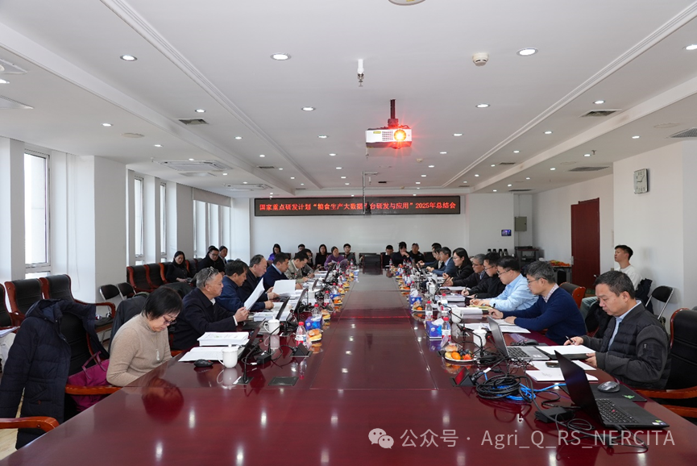
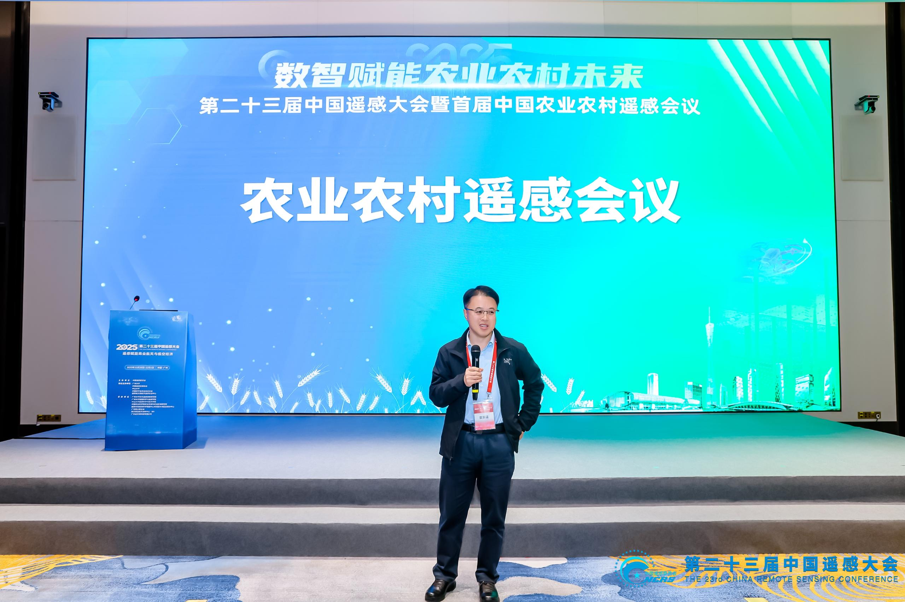
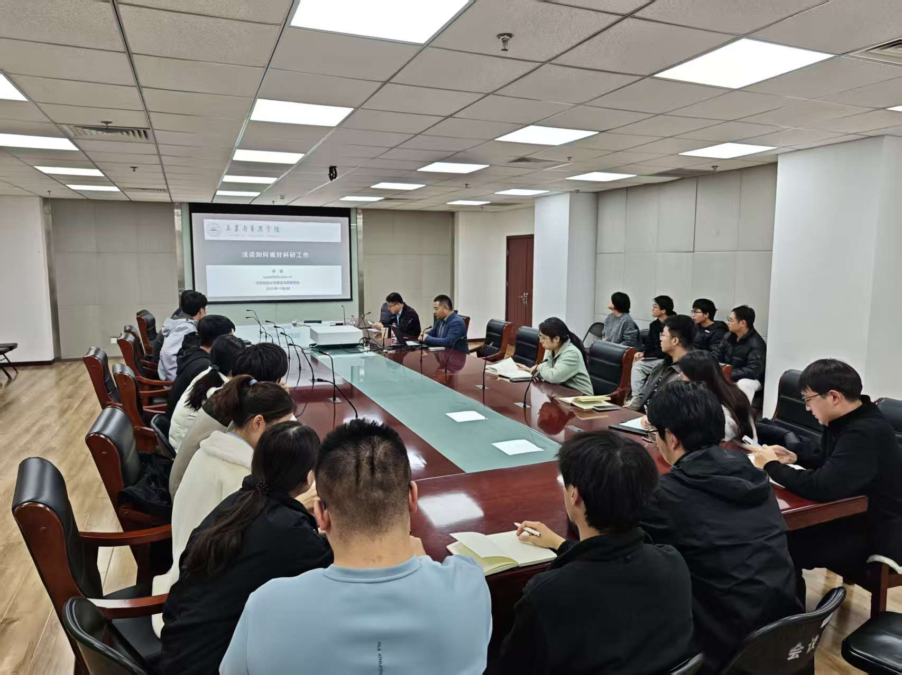
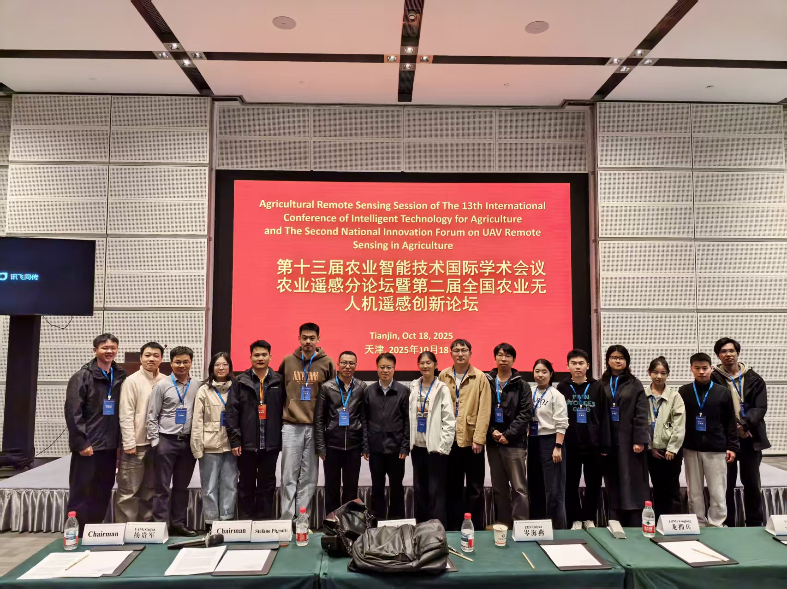
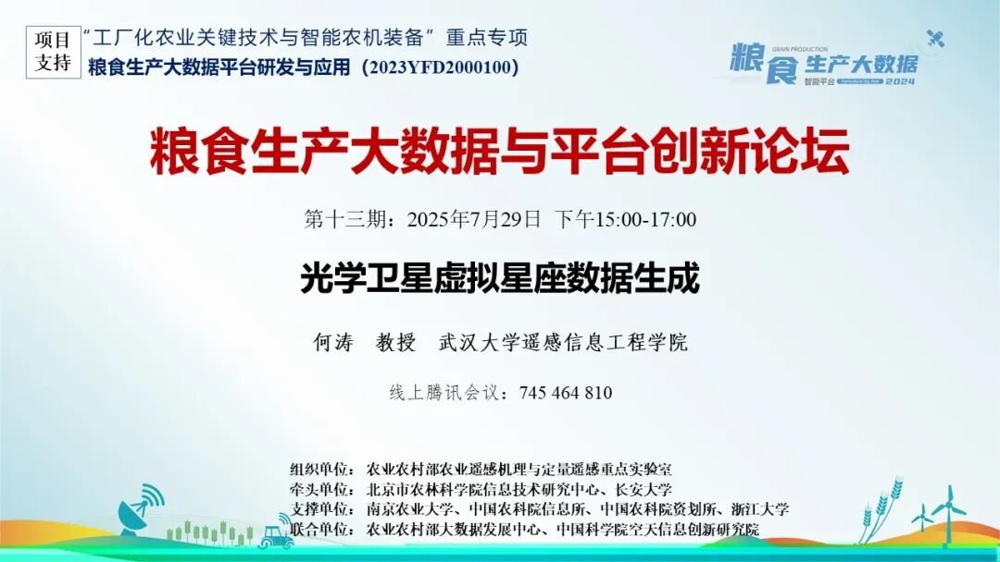
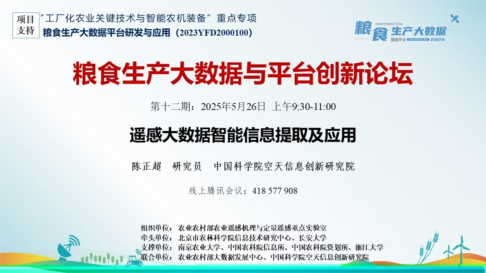
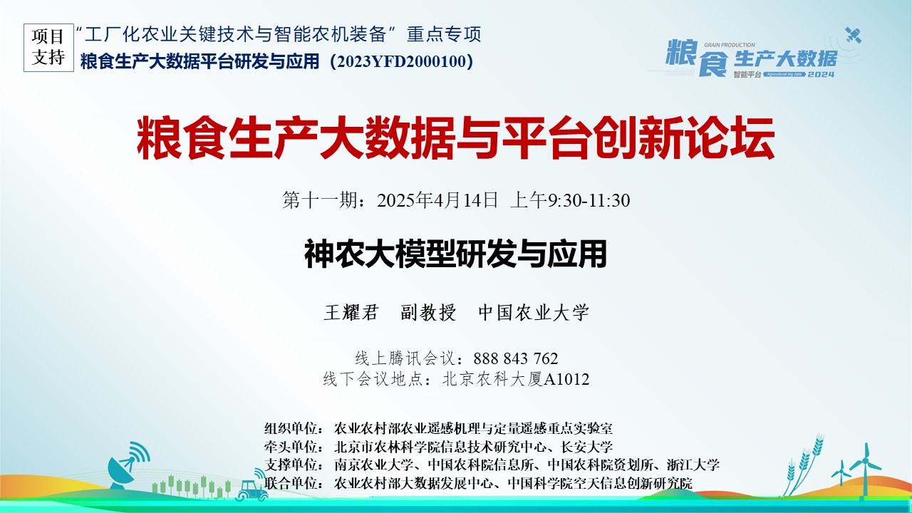
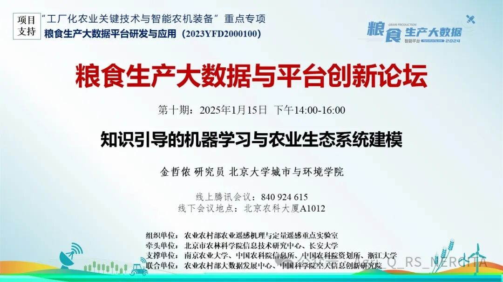

合作交流动态
- 召开国家重点研发计划“粮食生产大数据平台研发与应用”项目 2025 年度工作总结会
- 中粮糖业党委副书记总经理等人来访座谈交流
- 2025 年 11 月 28 日，杨贵军教授带队参加并主持首届农业农村遥感会议
- 2021 年 11 月 6 日，北京林业大学庾强教授应邀为实验室团队作“浅谈如何做好科研工作”报告
- 2025 年 10 月 17 日，杨贵军教授带队参加第十三届农业智能技术国际学术会议
- 2025 年 7 月 29 日，武汉大学何涛教授应邀为实验室团队作“光学遥感虚拟星座数据生成”报告
- 2025 年 5 月 26 日，中国空天院陈正超研究员应邀为实验室团队作“遥感大数据智能信息提取及应用”报告
- 2025 年 5 月 26 日，中国农业大学王耀君副教授应邀为实验室团队作“神农大模型研发与应用”报告
- 2025 年 1 月 15 日，北京大学金哲侬研究员应邀为实验室团队作“知识引导的机器学习与农业生态系统建模”报告
- 2024 年 10 月 25 日，杨贵军教授举办首届全国农业无人机遥感创新论坛








